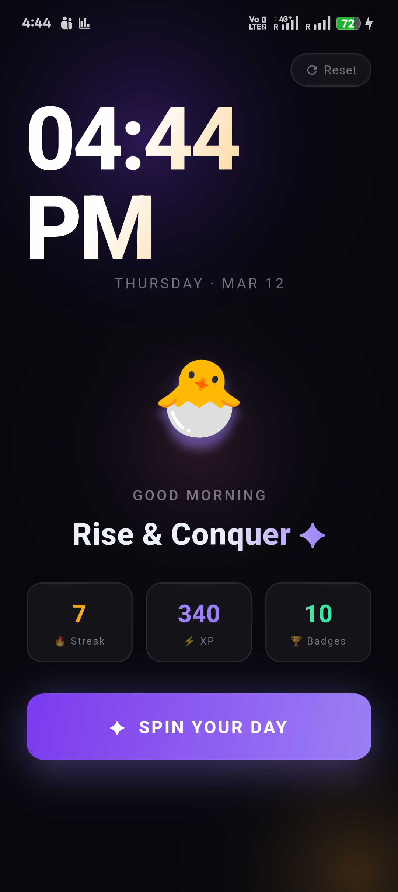
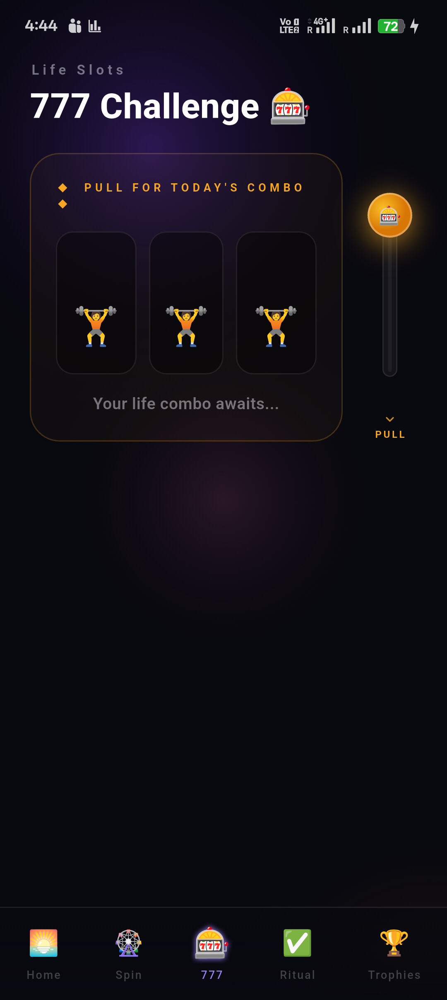
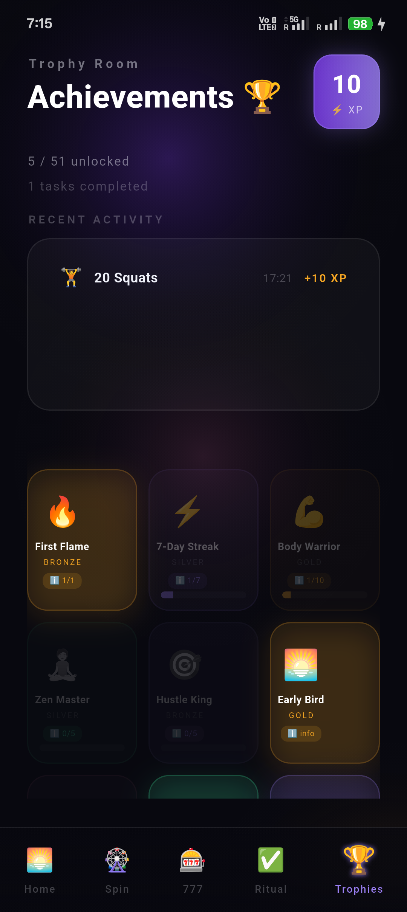
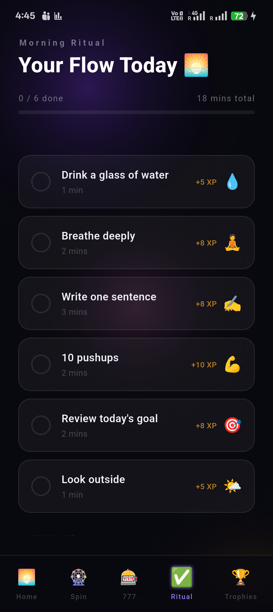
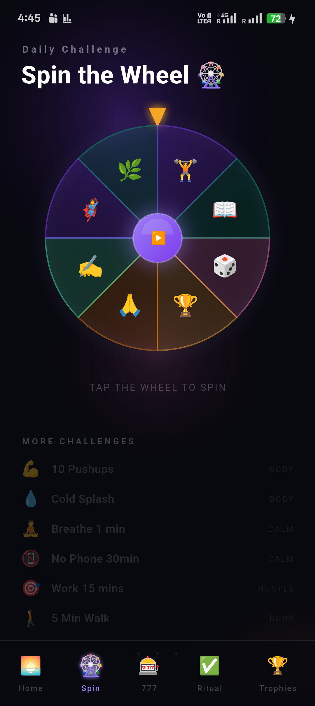

Your morning universe — built to replace doomscrolling.
Open this instead of Twitter/Instagram. Get a tiny challenge, a tiny ritual, and a tiny win — then start your day with momentum. Over time, those wins stack into a routine you actually control.
Why this works (especially after waking)
After waking, your body ramps up alertness. If you immediately jump into high-stimulation feeds, it’s easy to feel rushed, distracted, and reactive. A short “first win” can set a calmer tone for your attention.
You don’t need a 2‑hour routine. You need one doable step you can finish. This focuses on quick tasks that create a feedback loop: complete → feel progress → come back tomorrow.
The goal is simple: open this first, not social media. Win your morning in minutes, then return to life with more clarity and less wasted time.
Note: this is educational and not medical advice.
What each page does

🌅 Home
See your streak, XP, and the vibe for the day. Tap your pet, then jump into action with one button.

🎰 777
Pull a fun “life combo” for variety. Sometimes you hit a jackpot to keep mornings playful.

🏆 Trophies
Rare achievements that “charge up” as you progress. Tap any trophy to see exactly what’s left (e.g. 4/5).

✅ Ritual
A checklist that turns mornings into flow. Finish items, watch the progress bar fill, and collect XP.

🎡 Spin
One spin gives one clear challenge. Timers + quick inputs keep it practical. Mark as done to earn XP.
The trophy room makes progress visible. You’re not guessing — you can see how close you are, and keep stacking wins until your routine feels automatic.
Use it in 5 minutes
Before any social apps, open it once you wake up. Treat it like brushing your teeth.
Play 777 once and complete the combo (or do a ritual item). Keep it small. Keep it daily.
Watch trophies charge up and your activity list fill. You’re building identity through consistency.
In a month, you’ll feel the difference: less chaotic mornings, more direction, and less time wasted.
All screenshots
Quick preview of the full flow.